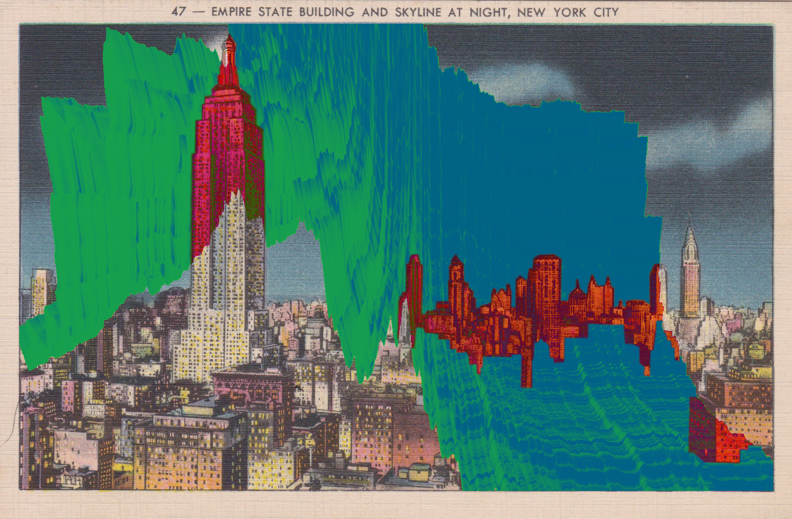
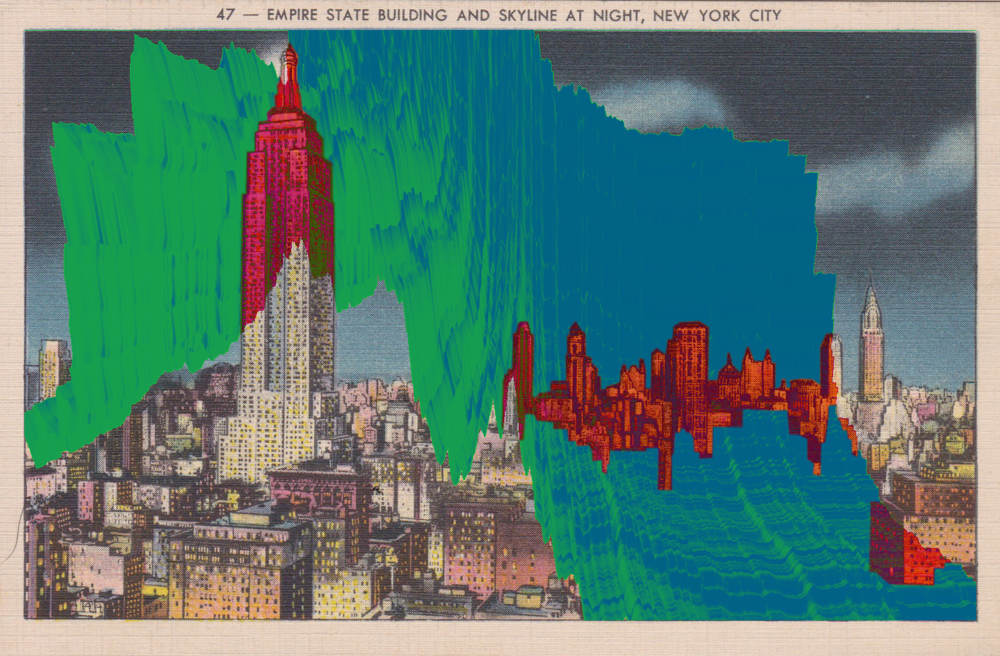

RESEARCH AND WRITING
PROPOSAL 02.2021
Theme and objective:
My objective is to study and visualize the unseen disconnect between the NFT (non-fungible token, crypto-art) space and its effects on the artist experience and the environment. By means of digital and physical experiments, as well as traditional research, I will explore the concepts of rarity, fragility, ephemerality, permanence, validity, and volatility of digital art in the context of crypto-art spaces. I am interested in activating the awareness of the individual artist or designer who has been or is considering engaging in the NFT space.
Relevance of the topic:
NFT marketplaces, backed by cryptocurrency, are a relatively new and rapidly growing virtual and cultural atmosphere. In the few years since NFTs made their appearance, the platforms have already become oversaturated with content, and only a select few (many with previous followings) have been able to truly profit from the space. In addition to these issues, the use of cryptocurrency as a way to mint these tokens and create “rarity” has further contributed to the ongoing use of excessive energy that is needed to keep cryptocurrencies functioning. These effects, which in the end exist as CO2 emissions, are often unseen or unfelt by the artists and designers engaging in the space. For these reasons, the topic becomes very relevant to artists but also designers. NFT marketplaces have the opportunity to shift the artistic experience, and we are already seeing these effects, especially in a pseudo-virtual world during and post the Covid-19 pandemic (virtual galleries, NFT engagement from auction houses and museums, etc.).
Motivation:
As a designer and pseudo-digital artist, I am interested in the cultivation of new spaces for individuals to create and interact in. Social media has long been a confusing space to navigate as a visual creator, and so I initially hoped that NFT marketplaces could exist as a new kind of space for artists not only to share work but also to profit from it. While these factors motivate many NFT users, it is the unseen consequences of the space that I felt have the dangerous ability to be toxic both to artist integrity as well to the environment. These issues are present and ongoing.
Cultural and History Thesis Work:
Alongside historical research into digital formats and digital viewing processes and technologies, I will collect data relevant to crypto-art marketplaces and its corresponding use of energy and C02 emissions, conduct interviews and surveys with NFT supporters, protesters, and the general (art and design engaged) public. Furthermore, I will research the issue of design as object, which translates directly into my practical experiments. My cultural and History work, as well as practical, will expand on the aforementioned concepts of rarity, fragility, ephemerality, permanence, validity, and volatility. More specifically, my research focuses on two primary issues. First, the objectivity and value of a digital work (and NFT) as an object, and more primarily, the unseen effects these objects have on artist integrity and the environment.
Practical Creative Thesis Work:
The goal with my practical experiments is to explore digital formats and works in the physical realm. I plan to do so by repurposing outdated, abandoned, or discarded technologies such as TVs, displays, monitors, digital storage devices, etc. By translating digital works, of which the content will reflect the data and issues uncovered in my research relevant to the environment and artist experience, into a singular physical (upcycled) object, I will not only be creating physical rarity, but also questioning the volatility of digital formats and technologies, all the while conducting the experiments under the umbrella of sustainability. Additionally, I plan to translate some of the content of these experiments into screen-printed series, reflecting the structure of NFT editions and connecting this new creative space to a very traditional one.
Design Question:
What does it mean to visualize something that is unseen or disconnected, and how is that visualization supported when it exists as a design object? How will the visualization of these issues in creative space add to the ongoing NFT narrative?
Objective:
The overall goal and object of my research is to explore the NFT space as objectively as possible, while still addressing the present issues of artist integrity, and environmental impacts. I do not intend to explore the space only as a protestor, but also as a visual journalist and digital artist. I believe there is potential for the NFT space to develop into a more sustainable and engaging community, or open the possibility of new spaces, but not before these issues are understood or addressed.
SKETCHBOOK

❮>

❮>

❮>

❮>

❮>

❮>

❮>

❮>

❮>
OBSERVATIONS
DATA_SCAPE_PROCESS
WRITING / FINAL THOUGHTS
Abstract:
In regard to the recent rise in popularity of NFT (non-fungible token) based digital art markets, there is much to be said. There is, in fact, too much to be said. Among a vast sea of pros and cons, I can only offer my criticism and focus on a selection of issues. For the purposes of my research, I explore two main points: The displaced environmental impact of the excessive use of energy by cryptocurrency systems, and the potentially toxic and confusing environment that is created for artists in the digital sphere and digital medium. These issues are majorly unseen or unfelt by the general audience engaging in these spaces, and raise questions of rarity, object value, and the aesthetics of the digital medium. What does it mean to be a digital artist? What have we gained from these spaces? What have we lost? What have we given? What have we taken? What then, is the role of the designer in identifying and visualizing these issues? The factors of emotion and data come in to play, two concepts otherwise found at contrast. How can the abstraction of data, (data relevant to the topic at hand), be used to evoke and activate the empathy and attention of the onlooker? This practice of abstracting data as a method for design is one that requires great attention to the context of the data, the emotional value of the data, the environment for the data, and the tools used to manipulate the data. Although the specificity of my topic is core to my experiments, hereby known as Data Scapes and NFTVS, my goal is to extend these practices with data abstraction further into the methods of information visualization and design.


 
